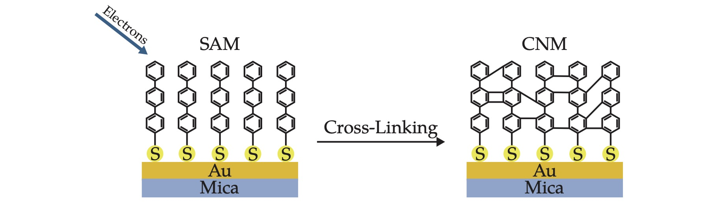
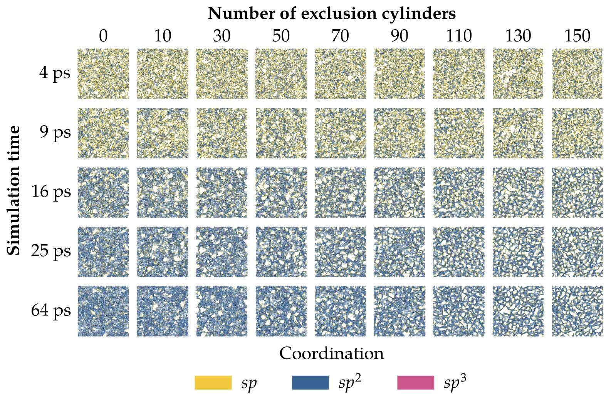
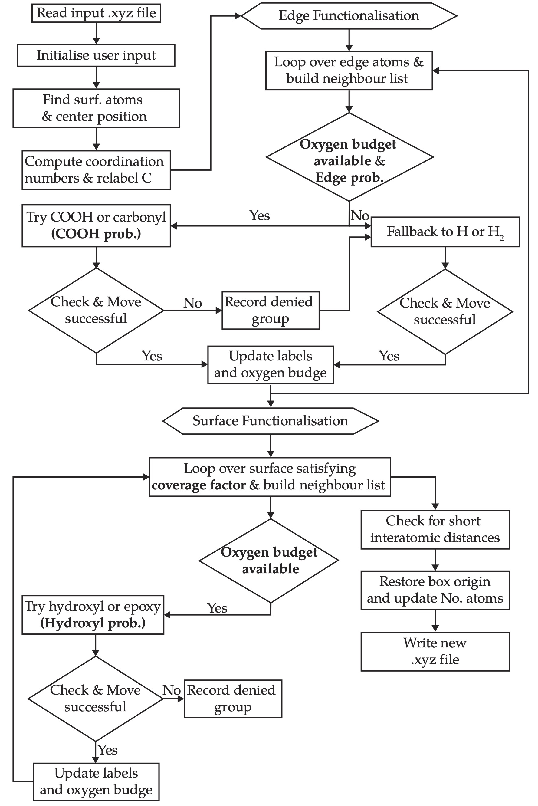
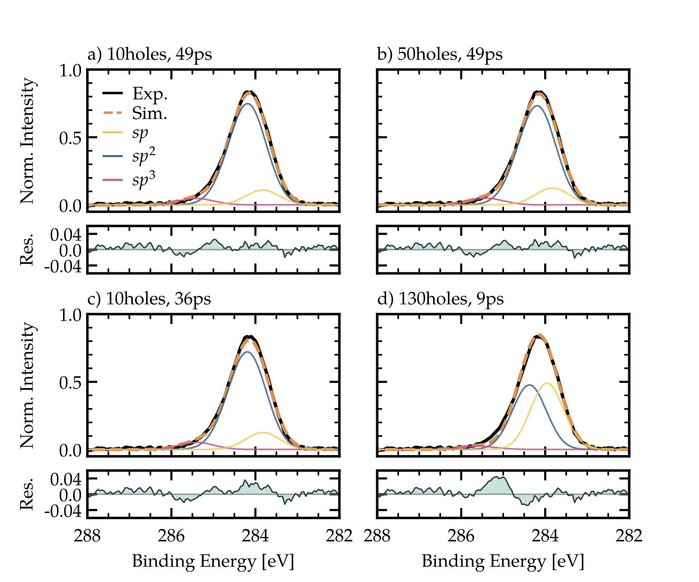
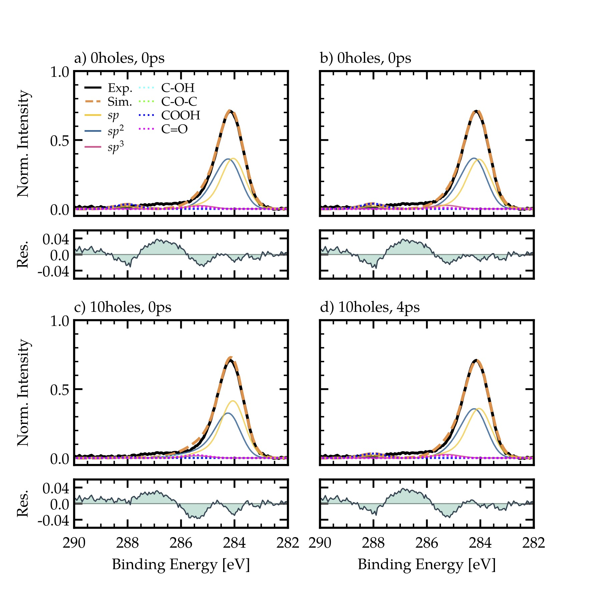

Overview
Nanometre-thin carbon nanomembranes (CNMs) belong to a broad class of materials that potentially have a wide range of applications, from fuel cells (Griffin et al. (2020)) and energy storage (Rajendran et al. (2021) , Rajendran et al. (2023)) to nanofiltration ( Yang et al. (2018), Van Deursen et al. (2019)), and water desalination ( Yang et al. (2020)). Free-standing CNMs are typically produced via electron irradiation-induced crosslinking of a self-assembled monolayer (SAM) composed of aromatic organic precursor molecules, such as biphenylthiol (BPT) or terphenylthiol (TPT). The ordered self-assembled monolayer arises as a result of the intermolecular interactions between the substrate atoms, typically gold or silver, and the thiol (-SH) group on the monomers. The cross-linking process can be performed with X-ray radiation or electron bombardment (see Figure 1). This process results in nanometre-thin carbon nanomembranes. By selective cleavage of the anchor group-substrate bond, or by dissolving the substrate after cross-linking it is possible to transfer the CNM onto a new substrate or support material as a free-standing carbon sheet. It is assumed that such a carbon network is reactive when exposed to the atmosphere, where the structure would be stabilised by hydrogen and oxygen groups. It is exactly this process that we aim to investigate in more detail using atomistic simulations and core-electron binding energy predictions by comparing it to experimental XPS measurements of pristine and atmosphere-exposed CNMs. To achieve this on a molecular level we designed the CarbOx code with added XPS-inspired functionalises.
Structural Properties and Atomistic Modelling
Structurally, CNMs are generally described as amorphous or non-crystalline carbon materials, characterised by their low Young's modulus and selective permeability to gases and water molecules. In contrast to crystalline carbon allotropes such as graphite and fullerenes, CNMs exhibit comparatively lower mechanical stiffness, with reported tensile moduli in the range of 6–12 GPa and ultimate tensile strengths between 400 and 700 MPa, depending on the molecular structure of the precursor. In this work the CNM structures were generated using the LAMMPS package together with an in-house MD simulation code (Vuković (2025)) based on the environment-dependent interaction potential (EDIP). The set of CNMs in Figure 2 were generated using an exclusion cylinder molecular dynamics simulation method to model various pore arrangements and real pore density ( Vuković et al. (2025)). The method enforces a target porosity by placing a number of cylinders perpendicular to the membrane plane within the unit cell and forbidding carbon atoms from entering these regions during the structural evolution. The cylinder positions are first relaxed by a hard-sphere-like dynamics to give an approximately homogeneous distribution. The carbon network is then evolved through region-restricted molecular dynamics, in which any atom entering the cylinder is reflected. As shown in Figure 2 the complete set of structures that we compare to our experimental data consists of nine unique cylinder configurations containing between 0 and 150 pores representing a pore density between 0.0 and 0.84 per nm$^2$. In the final step of the MD simulation, a thermostat with a linear heating rate of 270 K/ps is applied, reaching a maximum temperature of 3000 K after 10 ps. From this, nine additional structures were saved after 0, 1, 4, 9, 16, 25, 36, 49, and 64 ps. The simulated configurations consist of 13000 to 14000 atoms in a fully periodic unit cell of dimensions 135 × 135 × 12 $\AA^3$ based on the estimated TPT SAM density of ~1.3 g/cm$^3$. The carbon atoms in Figure 2 are coloured according to their coordination (or number of bonded neighbours), with sp in yellow, sp$^2$ in blue and sp$^3$ in magenta.
XPS-Inspired Carbon Functionalisation and CEBE Prediction
To improve our understanding of carbon nanomembranes and their reactivity when exposed to atmospheric conditions we populate the atomistic structures of CNM with oxygen and hydrogen using the extended CarbOx code illustrated in Figure 3. The code starts with the initial carbon structure and identifies edge and sp$^2$ surface carbons. It treats them separately in two loops: edge functionalisation and surface functionalisation. The oxygen budget in the structure can be controlled via the following user inputs:
- Total O/C ratio: Controls the overall oxygen ratio with respect to all carbon atoms.
- COOH probability: Probability of placing either a carboxyl or a carbonyl group at the edge.
- Hydroxyl probability: Probability of placing either a hydroxyl or an epoxy group at the surface.
- Coverage factor: Coverage factor of oxygen groups on the surface.
- Edge probability: Probability of placing an oxygen group at the edge, fallback is hydrogen passivation.
Outlook
This work outlines how ab initio-based workflows can be utilised for an in-depth quantitative analysis of XPS narrow-scan measurements, specifically for the C 1s peak, without relying too heavily on reference data. We directly obtain chemical shift and chemical state information from the predicted distribution (spectrum) of CEBEs requiring only the instrumental broadening as an input parameter. While the results achieved for the pristine CNMs confirm results obtained from other experiments ( Vuković et al. (2025)), a larger deviation in the residual (Fig. 5) is observable. This is due to the missing relaxation step after functionalisation, as no general COH-GAP is available. In a first attempt to improve the results, other potentials such as ReaxFF might help to improve the interpretation of the experimental data of atmosphere-exposed CNMs.
Gallery





- RoleContributor and Code Developer
- Year2025-ongoing
- ToolsLAMMPS, TurboGAP, Python, ASE, OVITO, VMD
- LinksCarbOx Code · Code (not yet published) · Thesis